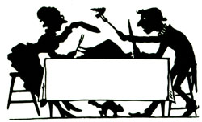
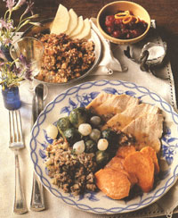
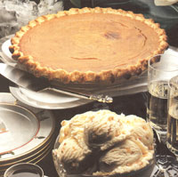

Saving Tradition
Cooking and preparing turkey, including recipes for smoked gravy, cranberry sauce, bread stuffing, sweet potatoes, pumpkin pie.
By Anne Vassal
October/November 1992
NATURAL HEALTH
Turkey is great for you! Here's how to take advantage of a low-calorie, low-fat holiday food.
I've decided to appoint Thanksgiving "Outstanding Holiday of the Year." It's not just about the scrumptious food, but the hours of family time. Your last relative invasion was probably Labor Day or July 4th, so you should have had plenty of time to recuperate by now. You can welcome those relatives with open arms. (Of course you may feel differently by the holiday season's end, when you stagger around asking, "Are these people here again?")
Thanksgiving is also a holiday of leisure. There is no pressure to buy extravagant gifts or haul 200-pound coolers. There's just a brief, frenzied period of mass food preparation, followed by gluttonous consumption. Then comes the football game, when the crowd either naps contentedly or cleans up for eight hours, depending on the gender. And it must be said, hokey or not: Thanksgiving really is about appreciating what we have. You simply-can't avoid that homey, feel-good glow.
Many of us treasure the nostalgia of old family recipes, regardless of whether or not we actually enjoy them. It's all about tradition. However, most of Grandma's recipes clearly originated from the "more-fat-and-sugar-is-better" era. Therefore I have tried to save tradition while adapting old recipes over the years. Truth is, I don't miss the gooey marshmallows swimming on my yams. Or the puddle of butter in Grandma's turkey dressing. You can alter tradition without killing it.
Take it Outside
Last Thanksgiving, my husband, feeling adventurous, decided to throw a naturally-raised turkey on the weber grill. (I was certainly in favor of bypassing five hours of oven-sitting a 16pound turkey.) It turned out to be the most delicious turkey we've ever tasted-despite a mishap or two.
My husband's holiday philosophy is "Ease into the day," which is why he mo seyed out back to begin cooking at 2 P.M. -just when we had planned to sit and eat. Fortunately, it was a warm 30° outside. Unfortunately, there were winds up to 40 miles per hour. Because the turkey made the grill top heavy in the winds, we had to anchor the grill down with bricks. (We thought it would be disastrous if the turkey blew into our neighbor's yard.)
Not only did it get dark by 5 P.M. , but we had trouble keeping the coals burn ing-especially after it rained. By 7 P.M. , I had one seriously crabby husband on my hands. However I also had a very tender smoked turkey.
I didn't stuff the bird since I simply could not imagine a smoked stuffing. So I baked it in a casserole instead, and since my family insists on having mashed potatoes and gravy with their turkey, I made gravy from the delicious smoked drippings. Will we be grilling again this Thanksgiving? Of course! Not because we enjoy suffering on national holidays, but because we're practically experts now-we've practiced on roast chickens all summer long. We are ready for November's "Big Bird BBQ."
When done correctly, grilling is a faster and easier way to prepare a turkey. A 17-pounder will be done in about 2 1/2 hours (approximately 11 minutes per pound.) Once you've mastered this method, you're hooked for life-and eternally liberated from the hells of a hot kitchen. It also beats the plastic roasting bag method (which produces a steamed-to-death turkey), the slow cooking-drowned-in-butter method, and the oiled paper-bag method. (One horrendous year, my brother-in-law filled the house with black smoke, setting off all the smoke alarms.)
Grilling Your Bird
Defrost the turkey (completely) in the refrigerator before cooking. Remove the parts, and wash and dry the turkey inside and out. Then rub the outside of the turkey with olive oil and garlic, and sprinkle the herbs of your choice on the skin. (Sage, Rosemary, Marjoram, and Thyme all make good seasonings). Stuff the bird if you wish. (I prefer not to.)
Prepare the grill
Use what your kettle's instruction booklet calls the "indirect method." The charcoal briquettes are placed along two opposing sides of the kettle in equal amounts. Start with 25 for each side when it's warm outside, 30 per side if it's nippy, and 35 if it's downright cold. Hold the briquettes off to the sides with metal rails that clip onto the bottom grate. Between the rails fits a drip pan which is the essence of indirect cooking. (The proper-size aluminum pans and rails can be bought in a kit that's available where grilling supplies are sold. A disposable aluminum pan will also work.) Instead of the meat's juices dripping directly onto the coals, they col lect in the pan, and there is less fat-smoke generated in the kettle. The equal number of briquettes on each side of the kettle provides even, intense heat when the kettle is closed. It's cold outside so remember to keep it closed. Now it's take-it-easy time because there is no basting with any heavy, fatty substances. Just peek in once an hour to add a briquette or two. It's done when the meat thermometer stuck in the thigh reads 180° F. Don't overcook it-you want that bird nice and juicy.
Some Extra Turkey Tips
Do a trial run on a good weather day when you're not pressured for time. (How about a week or two before?) Select a turkey that will fit comfortably on your grill with the lid on. Have your oven roasting pan and paraphernalia handy so you'll have an alternate plan (in case of a blizzard, hurricane, etc.). Remove the kettle lid as little as possible to maintain your "oven" temperature. Lastly, use wood chips such as mesquite or hickory during the last hour of cooking, and save the drippings for smoked gravy.
Smoked Gravy
juices of the turkey
2 to 3 tablespoons arrowroot flour
1 cup milk
2 to 3 tablespoons dry cooking sherry
ground pepper
cayenne pepper
salt
Since the amount of drippings varies for each turkey, I'll give approximate measurements. Boil the juices on top of the stove in a large frying pan. Add some freshly ground pepper, a few dashes of cayenne pepper, and salt. Whisk arrowroot flour into the juices. (Arrowroot, better-tasting and healthier than cornstarch, can be purchased at health food stores.) Then gradually add milk and dry cooking sher ry, and heat until bubbling. If the gravy is too thin, add more flour; if it's too thick, add more liquid. Pour through a strainer into a gravy boat just before serving.
Cranberry Sauce
1 bag fresh cranberries (or fresh frozen)
1 1/4 cups water
1/3 cup honey
1 tablespoon sugar
1/4 cup freshly squeezed orange juice
1 teaspoon grated orange rind
Boil water and honey together for about five minutes. Add cranberries and boil without stirring until all the skins pop open (about five minutes). Remove from heat when sauce is thick. Let cool slightly before adding juice and rind.
Gabby's Bread Stuffing
Stuffs a 14- to 16- pound turkey.
1 1/2 loaves day-old, plain whole-wheat bread (depending on the size of the loaves). Omit end piece.
4 tablespoons butter
1 cup finely chopped onion
1 1/2 cups finely chopped celery
1/2 cup chicken broth (unsalted)
1/4 teaspoon salt
freshly ground pepper
1/4 teaspoon cayenne pepper
2 teaspoons poultry seasoning (Gabby used "Bell's" which is still available)
1/4 cup finely chopped parsley
Cut bread loaves into one-half inch cubes. Melt butter in skillet, and then add onion and celery. Sauté briefly. Add and heat chicken broth, and then add this mixture to bread cubes. Add salt, peppers, seasoning, and parsley. Toss lightly like a salad, mixing thoroughly.
Sweet Potatoes
8 medium sweet potatoes, cut in half
1/4 cup (real) maple syrup
1/4 cup freshly squeezed orange juice
1 teaspoon grated orange rind
1/2 inch piece of ginger root (or 1/2 table spoons ground ginger)
dash of cayenne pepper
Fill a large saucepan with 1 1/2 inches of water, placing a vegetable steamer (if you have one) in the pan holding the sweet potatoes. Cover and steam until they are just done but still slightly firm (test by inserting a fork). Cool, peel, and slice into 1 1/2 inch circles. Place potatoes in a shallow casserole dish.
H eat maple syrup until warm. Squeeze ginger root in a garlic press to extract the juice, and then add it with the orange juice, rind, and cayenne to the maple syrup. Drizzle over the sweet potatoes and toss to coat. Cover and refrigerate until a half hour before serving. Heat in microwave for eight to 10 minutes, stirring occasionally, or heat in a 350°F oven for 20 to 25 minutes. Remove the lid for the last 10 minutes if you like a dryer potato.
Pumpkin Pie
Crust :
Use a nine-inch deep-dish frozen crust, or one made easily in the food processor in three minutes (if you don't have a processor, use a pastry blender or two forks). Divide the dough in half, pressing it into two thick circles. Wrap each circle in plastic wrap and freeze until pie day. (Defrost overnight in the refrigerator).
This recipe makes two nine-inch one-crust pies.
2 cups whole wheat pastry flour (sifted)
or 1 cup unbleached white flour plus 1
cup whole wheat flour
2/3 cup frozen margarine
6 to 8 tablespoons ice water
Cut the margarine into 1/2-inch slices. Put in food processor with the flour, and pulse until the flour and margarine are pebble-sized. Continue to pulse and slowly add the water. The dough will form a ball when enough water has been added. Chill before rolling out on wax paper.
If you wish to use less fat, use 1/2 cupmar garine, although the crust won't be quite as tender. Also, you may want to use one cup of unbleached white flour instead of wholewheat pastry to produce a lighter textured crust.
Pie Filling
Mix in a blender:
2 cups cooked, mashed pumpkin or
squash (canned/or fresh)
1/3 cup honey
1 tablespoon brown sugar
2 eggs
1 cup milk (3/4 cup if you're using fresh squash or pumpkin)
1 teaspoon cinnamon
1/2 teaspoon ginger
1/4 teaspoon allspice
1/4 teaspoon mace (or nutmeg)
Pour into a 9-inch pie shell. Bake at 350°F. about one hour or until firm. If the crust begins to get too dark, cover the rim lightly with foil. Cool before slicing.
I like to use fresh butternut or buttercup squash if I don't have any fresh pumpkin. Puree in the blender before using. Canned pumpkin will produce a firmer pie.
|
 STEVEN MARK NEEDHAM/ENVISION |
 |
 |
|
 |
|
|